Photos from my travels
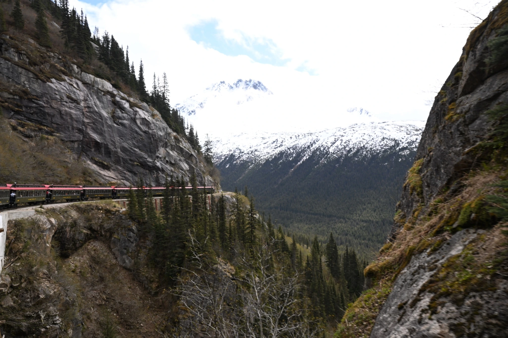
Alaska
View photos ↓Mountain views, train rides, wildlife, and trails from my travels in Alaska.
14 photographs · All photos
By rail
White Pass & Yukon Route near Skagway
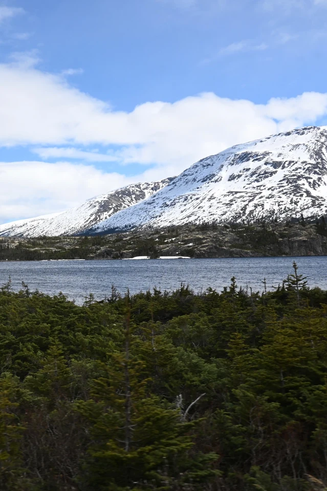
MountainsAlpine lake in White Pass, Alaska
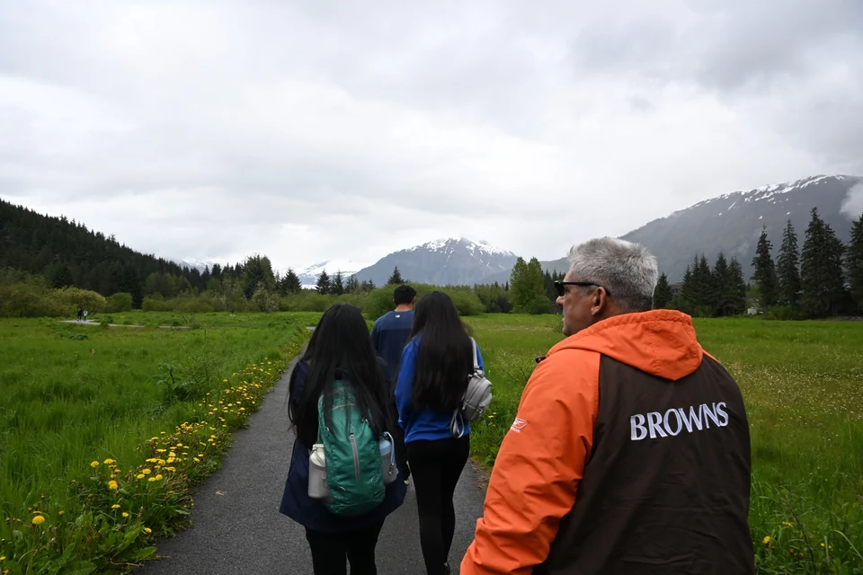
On the trailMountain hike in Juneau, Alaska
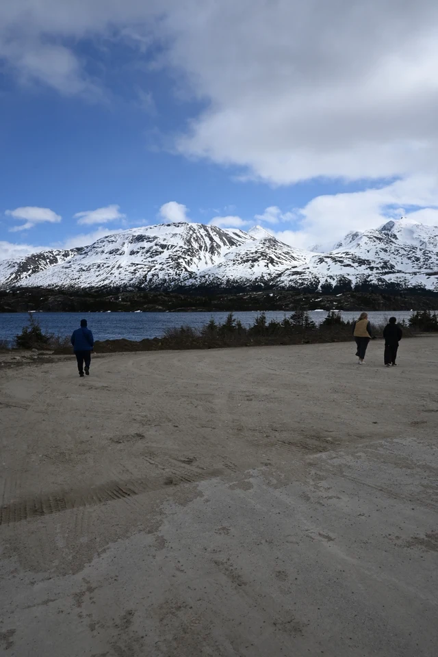
MountainsSnowy mountains in Alaska
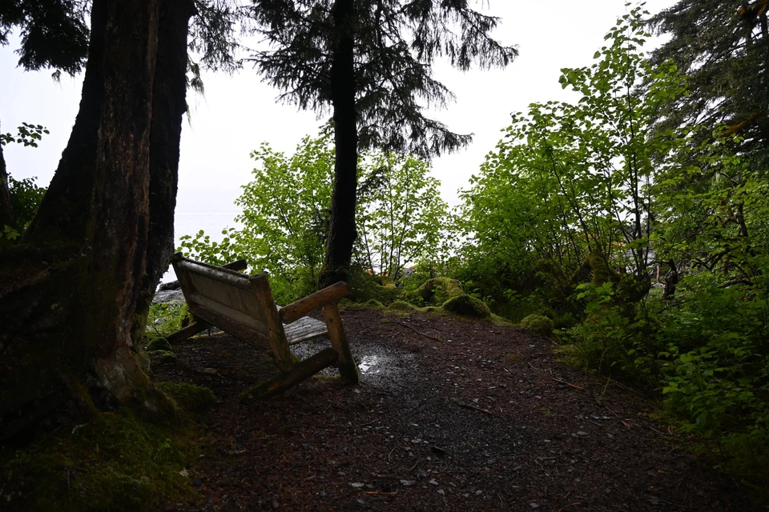
On the trailRainforest trail in Juneau, Alaska
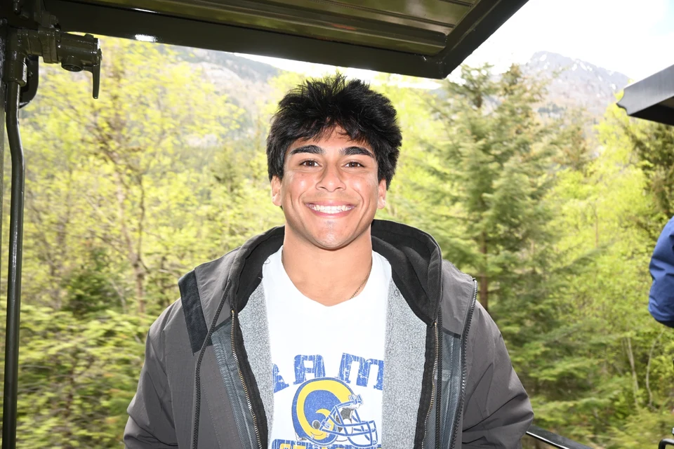
By railRiding the White Pass train in Skagway
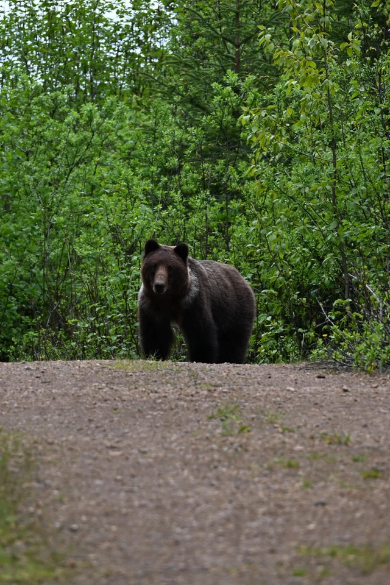
WildlifeCoastal brown bear in Hoonah, Alaska
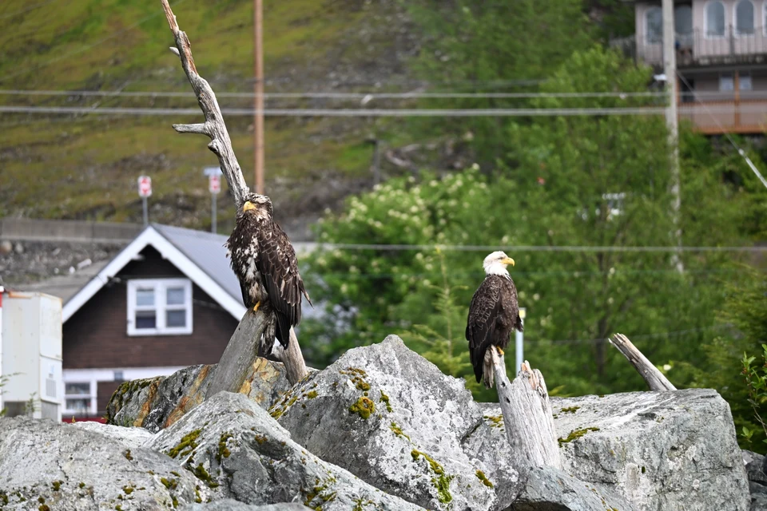
WildlifeBald eagles in Ketchikan, Alaska
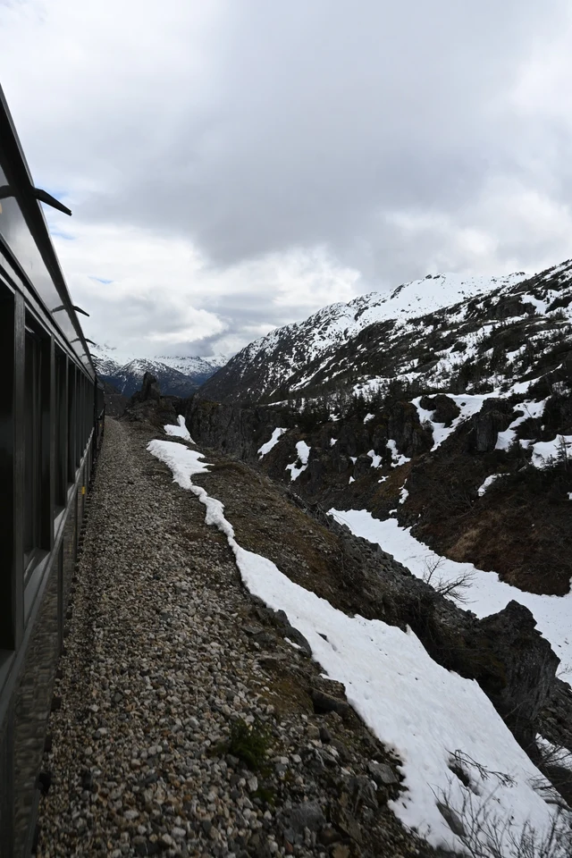
By railSnow beside the White Pass railway
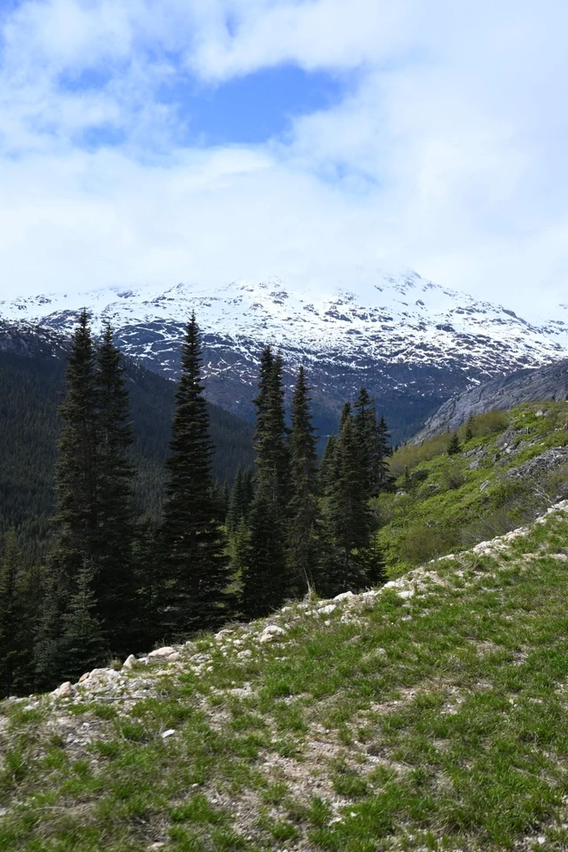
MountainsWhite Pass mountain views, Alaska
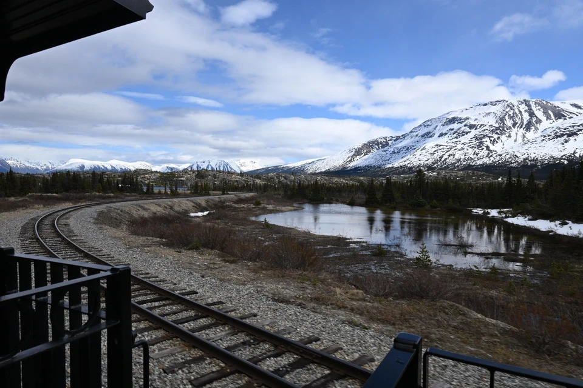
By railWhite Pass train by the water in Skagway
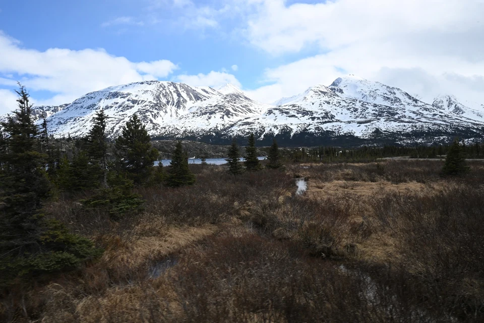
MountainsWhite Pass mountains beneath a blue sky
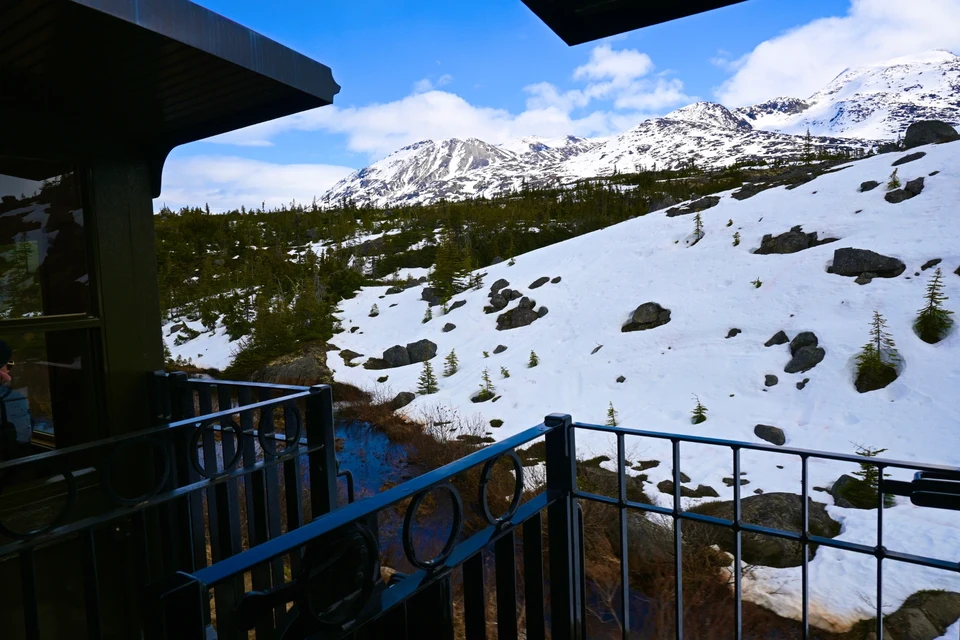
By railSnowy views from the White Pass train
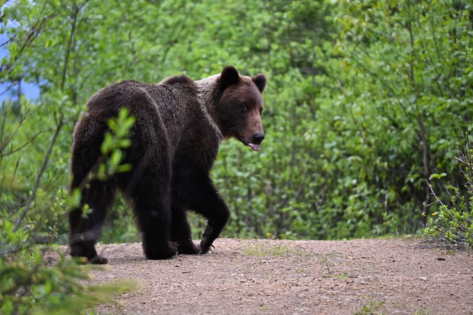
Wildlife